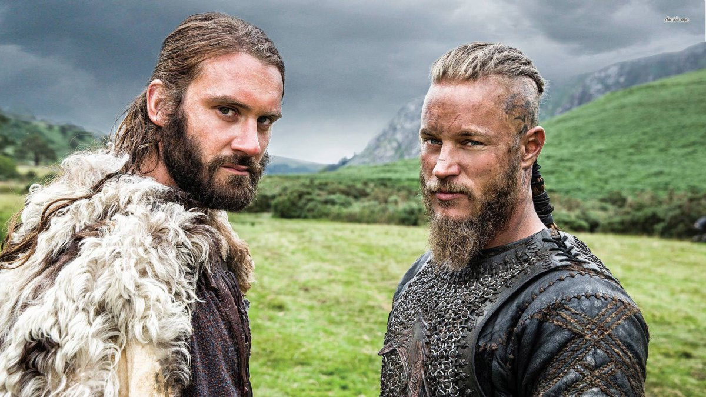
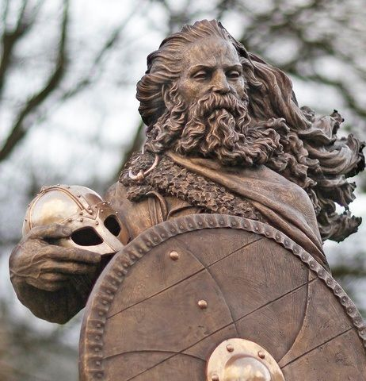

RAGNAR LODBROK: Ragnar Lodbrok (nórdico antiguo: Ragnarr Loðbrók Sigurdsson) fue un rey legendario de Noruega, Suecia y Dinamarca que reinó en el siglo IX. Según el cronista danés Saxo Grammaticus, Ragnar pertenecía a la línea real de la casa de los Ynglings. De acuerdo a estas crónicas y las sagas islandesas, se le considera hijo de Sigurd Ring, rey de Suecia y conquistador de Dinamarca, y su consorte Alfhild Gandolfsdatter (n. 710), hija de Gandalf Alfgeirsson. No hay acuerdo sobre cuál era la capital de sus dominios, ni en qué país residía normalmente. A pesar de aparecer como un héroe local, no hay muchas biografías suyas, apenas se pueden hallar algunas menciones en las sagas. La datación de su reinado es incierta: algunas fuentes lo sitúan entre 750 y 794, otras de 860 a 865 y otras más probables entre 835 y su muerte en 865. Tampoco se sabe si fue reconocido como rey durante todo ese tiempo.Ragnar era pagano devoto y, de acuerdo a las leyendas nórdicas, pretendía ser descendiente del dios Odín. Por ello no tenía reparos en atacar a las ciudades cristianas en fiestas sagradas (de hecho lo prefería, pues la sorpresa era mayor y los soldados solían estar en el templo). Se le ha vinculado en matrimonio con dos famosas guerreras skjaldmö, Lathgertha en Gesta Danorum, y la reina Aslaug (Aslög), la hija de Sigurd y Brynhildr, según la saga Völsunga.La historicidad de la vida de Ragnar, solo parcialmente en lugares y tiempos cubiertos por las páginas de la historia, no es muy clara. En su comentario a la Gesta Danorum de Saxo Grammaticus, Hilda Ellis Davidson señala los notorios esfuerzos de Saxo en el libro IX de la Gesta por consolidar, bajo el reinado de Ragnar, diversos eventos e historias confusas, y en ocasiones contradictorias, de las que tenía conocimiento.
HARALD FAIRHAIR
Harald I de Noruega, conocido como Harald Cabellera Hermosa (en nórdico antiguo: Haraldr Halfdanarson y Haraldr Hárfagri; en noruego: Harald Hårfagre) (c. 850 - c. 933), fue rey de Noruega desde 872 hasta 933. Era hijo de Halfdan el Negro y de Ragnhild Sigurdsdatter. Fue el primer rey de Noruega. A través de conquistas, logró unificar un conjunto de pequeños reinos rivales y extendió su dominio sobre Escocia, las Islas Hébridas, las Órcadas y las Shetland. La persecución que hizo de sus enemigos llevó al poblamiento noruego de Islandia.Sucedió a su padre Halfdan el Negro en el año 860 como soberano de un conjunto de pequeños territorios en el reino de Vestfold. En 866, Harald comenzó una serie de conquistas que comprendían el sureste de la actual Noruega y la provincia sueca de Värmland. En 872 logró una gran victoria naval ante sus enemigos en la batalla de Hafrsfjord, cerca de la ciudad de Stavanger y los expulsó de sus tierras. A partir de ese momento unificó Noruega y estableció un sistema de impuestos convirtiéndose en Harald I de Noruega. Algunos de los noruegos exiliados por Harald Harfagr huyeron hacia el este, hacia las actuales provincias suecas de Jämtland y Hälsingland. Otros se refugiaron en los archipiélagos del Atlántico, pero Harald I los persiguió a las Shetlands, las Órcadas y las Hébridas. Otros se unieron a expediciones vikingas a Escocia, mientras que algunos fueron aún más lejos: en 874, un noruego llamado Ingólfur Arnarson llegó hasta la isla que llamó Islandia (tierra de hielo). Es posible que la isla hubiera recibido algunas visitas anteriores, probablemente de monjes irlandeses que huían de las primeras incursiones vikingas, pero lo cierto es que Islandia estaba deshabitada desde hacía más de setenta años. Los noruegos se convirtieron en sus primeros pobladores estables al fundar la ciudad de Reikiavik. ñ